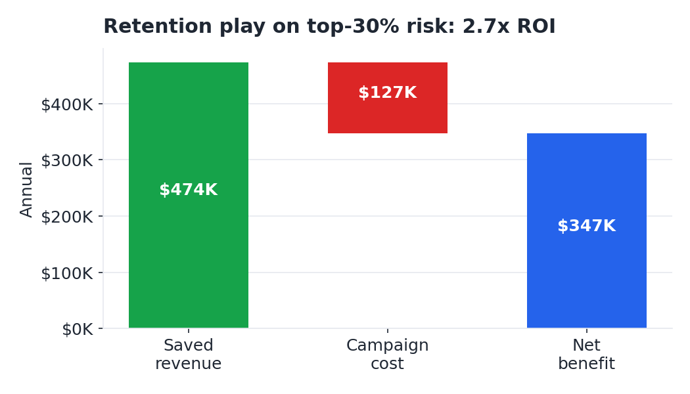

The question
Who is most likely to leave, why, and is it worth paying to keep them?
What we found
1. It's expensive churn. $1.67M/yr walks out
the door, and churners pay more than those who stay ($74 vs $61/mo) — so retention pays.
2. The drivers are clear and consistent. Month-to-month
contracts churn 43% vs 3% on two-year; 53% of new customers leave in the
first six months; electronic-check (45%) and no-tech-support (42%) customers are high-risk.
3. It's predictable. A logistic-regression model
(test AUC 0.85) puts 67% of all churn in the top 30% of customers by risk —
the basis for efficient targeting.
Recommendation
- Aim, don't spray. Focus retention on the top 30% risk (2x budget efficiency).
- Attack contract type. Move high-risk month-to-month customers onto 1–2 year terms.
- Fix the first six months. Invest in onboarding and bundle tech support / online security (both roughly halve churn).
- Shift electronic-check payers to autopay — the highest-churn payment method.
$347K
estimated net benefit / year
2.7x
return on retention spend

Base case: a $60 offer to the top-30% risk segment (2,113 customers) at a
30% save rate. Positive down to a 15% save rate.